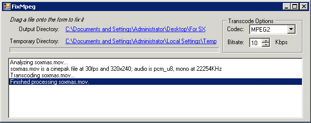

{kind=link}

FixMpeg is a simple front end to ffmpeg that will convert the audio format and sample rate in an mpeg2 file (.mpg). It is intended to aid the migration of files to the SX Video Servers from Tightrope Media Systems. It will not touch the video, but only convert the audio in a file if it is not correct to stereo MPEG1 layer 2 audio (typical uses are to convert from the wrong sample rate -- 44.1kHz to 48kHz or to convert AC3 audio).
Simply extract the zip file, double click the FixMpeg.exe (not ffmpeg.exe) and then drag a batch of mpeg2 files onto the window. Files that are already correct will be copied, files that can be converted will be converted and you will get a message about any incompatible files.
You can click the path to point it at your desired content directory (it will create a file there with the same name when processing). There's no installer, just place the extracted folder somewhere convenient, and perhaps make a shortcut to FixMpeg.exe someplace even more convenient.
After launching the application, you'll see the FixMpeg main window: 
All downloads include a copy of the source code.
Interested in helping improve this software? Create your own fork from our GitHub repository.
To get it running on your Mac, first download mono and install it. Then, in in the FixMpeg directory there will be a FixMpeg.zip, double click it in the Finder to extract it. Once that finishes, you'll see an AppleScript called "FixMpeg" (with an icon if a script standing on a square). Double click the script, it will configure and run FixMpeg for you. Status isn't perfect yet, but it works.
The MIT License
Copyright (c) 2008-2009 Scott Jann, Tightrope Media Systems
Permission is hereby granted, free of charge, to any person obtaining a copy of this software and associated documentation files (the "Software"), to deal in the Software without restriction, including without limitation the rights to use, copy, modify, merge, publish, distribute, sublicense, and/or sell copies of the Software, and to permit persons to whom the Software is furnished to do so, subject to the following conditions:
The above copyright notice and this permission notice shall be included in all copies or substantial portions of the Software.
THE SOFTWARE IS PROVIDED "AS IS", WITHOUT WARRANTY OF ANY KIND, EXPRESS OR IMPLIED, INCLUDING BUT NOT LIMITED TO THE WARRANTIES OF MERCHANTABILITY, FITNESS FOR A PARTICULAR PURPOSE AND NONINFRINGEMENT. IN NO EVENT SHALL THE AUTHORS OR COPYRIGHT HOLDERS BE LIABLE FOR ANY CLAIM, DAMAGES OR OTHER LIABILITY, WHETHER IN AN ACTION OF CONTRACT, TORT OR OTHERWISE, ARISING FROM, OUT OF OR IN CONNECTION WITH THE SOFTWARE OR THE USE OR OTHER DEALINGS IN THE SOFTWARE.